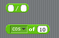
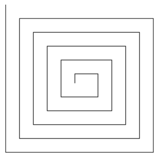
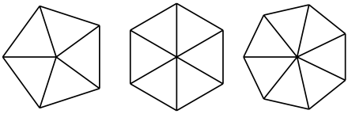
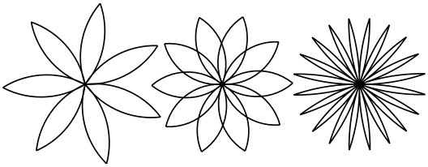

When you open Scratch, the screen is divided into three sections. In the middle, you will find the different commands we can use to instruct Scratch. On the far right, we have an open Script pane where our commands are added and linked. And on the far left, we see Scratch in the middle of the stage, waiting for our instructions.
Drag the "move (10) steps" block to the scripts portion of the screen and drop it. Then click on this block. You should see Scratch start to move. Every time you click, the instruction will be executed and Scratch should react accordingly.
Next, drag over the "turn right (15) degrees" block. As before, when clikced, Scratch will react. You can link these two block together by placing one near enough to the other such that a white line will appear between them. When the block is released, the two blocks will be joined. And when clicked, they will be executed together, first the one on the top, then the one on the bottom.
If you want to change how far Scratch moves or turns, click inside the white bubble where the number is found, and then type in your new number.
Task: With one mouse click, have Scratch move in a square.
Task Have Scratch draw your initials on the screen with one mouse click. As you test out your command blocks, you might find the "clear" button helpful.
Find the "repeat (10)" block and drag it to your script screen. Any blocks placed inside the "repeat" block with be executed as many times as are specified, and the number can be changed by clicking on it and typing in a new one.
Task: Use the repeat block to have Scratch draw a square. Alter this block to have her draw an octagon.
Task: What is the general formula for the angle given the number of sides?
To plug this formula into Scratch, we need two items, Variables and Operators. Under the Data tab you will see a button called "Make a Variable". Click this and name the variable "sides". Create another variable called "angle".
 We now have new blocks to use in our programs. First, drag over a "set ___ to 0" block, add it to the top of your drawing segment. Select "angle" as the variable, and type 72 into the block. Next, drag over the "angle" block, and place it in the "turn right ___ degrees" block. We've now separated and generalized this number, so whatever we set the angle variable to, the "turn right ___ degrees" block will use that same number.
One more step, and we can have the angle depend on the number of sides. Drag over a "set ___ to 0" block, select sides, and type 5 into the block. Add it to the top before the "set angle to 72" block.
Now, select the Operators tab. You'll find at the top your common mathematical operators, +, -, *, /, with a place on the left and the right. Drag over the division block and place it inside the "set angle to ___" block. Use the formula you devised up above to relate angle and the number of sides, adding blocks and numbers as necessary.
Task: There is one more thing you should change in your program to depend on the variable "sides". What is it?
To earn a D on this lab, hand in the work for having Scratch draw your initials on the screen.
To earn a C, do the above, and write a program to draw a spiral.

To earn a B, do the above, and write a program to draw a pie with 5 pieces as shown below.
To earn an A, do the above, and write a program to draw a pie with n pieces, using variables and repetition blocks.

To earn a 100, do the above, and write a program to draw a flower when given the number of petals. (Your flowers do not have to look exactly like the examples below.)
